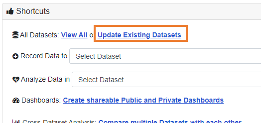
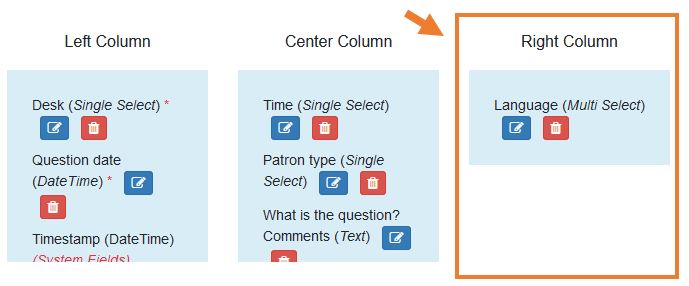

LibInsight contact training
Library Data Team
Jeremy Buhler, Brett Dimond, Meghan Waitt
June 2022
Session content
- Overview and timeline
- Role of LibInsight contacts
- Differences from Desk Tracker
- Customizing the Patron questions dataset
- Getting help, supporting your teams
slides at https://bit.ly/libinsight-contact


To annotate in a Zoom presentation


Love Desk Tracker
Hate Desk Tracker
Pessimistic about LibInsight
Optimistic about LibInsight
Overview and timeline
Project scope
Migrate Desk Tracker forms to LibInsight datasets
Prepare Library employees for the change
Gate counts will also migrate to LibInsight; separate training will be offered to current gate count reporters.
Timeline
- LibInsight contact training completed - July 1
- All datasets (data entry forms) ready - July 15
- Self-serve online documentation published - July 22
- Drop-in training sessions completed - Aug 20
Switch to LibInsight Sep 1, 2022
Role of LibInsight contacts
Keep their branches/units informed
Answer basic LibInsight questions
Assist with LibInsight configuration
Onboard new employees
Keep their branches/units informed
Share updates, deadlines, and other important information about LibInsight with their teams
Answer basic LibInsight questions
Questions should be directed first to LibInsight contacts who are familiar with the software and local branch/unit practice
Assist with LibInsight configuration
Some settings are specific to each branch/unit (e.g. naming of desks, custom fields in the Patron questions dataset)
Onboard new employees
Ensure new employess can login, access relevant datasets, and follow established data entry practices
Homework #1!
Tell your branch/unit colleagues about your role
Differences from Desk Tracker
CWL-based user accounts
Library employees will login with CWL
(there will be no shared LibInsight accounts)
New names for datasets
Datasets have new names that reflect their content and align with ARL survey definitions
| Desk Tracker | LibInsight |
|---|---|
| Activity | Patron questions |
| Classes | Group presentations |
Identifying the desk
LibInsight does not identify desk at login, it is a field in the dataset
More control over data entry forms
Branches/units can customize their own Patron questions datasets by adding fields for local needs
https://libraryubc.libinsight.com
LibInsight login screen (choose CWL Authentication)

Use the shortcuts menu on the home screen to
record data

update existing dataset
analyze data

Patron questions dataset, Asian Library
Third column is for optional branch-specific questions

Homework #2!
Consult your team and confirm your branch/unit's Desk list by July 7
Customizing the Patron questions dataset
Each branch/unit has its own Patron questions dataset
Custom questions may be added to the right-hand column of the form
Do not edit the left-hand and center columns: these are the same at all locations for consistent data collection and reporting
Custom questions in Desk Tracker will be migrated to LibInsight by the Library Data Team
Don't worry about editing the Patron questions dataset now, but when you do...
...only make changes in the Setup Fields section...

...and only add/edit fields in the Right Column
Getting help, supporting your teams
Consult LibInsight pages in Confluence
https://confluence.it.ubc.ca/display/ASMNT/LibInsightRequest help from Library Data Team
https://helpdesk.library.ubc.ca
Library Data and Reports form
Consult your colleagues on the listserv
lib-insightcontacts@lists.ubc.ca